library(tidyverse)
library(gapminder)Module 1 R Tools
Introduction
Last class, we discussed the concept of a statistical model and introduced our first model in R: a simple linear model \[ Y = \beta_0 + \beta_1 X + \varepsilon \] where \(\varepsilon\) is a normal random variable with standard deviation \(\sigma\). We shall henceforth call this model a simple linear model (SLM). Before we progress to a further analysis of what it tells us about data, we’ll spend this class reviewing (or for some of you learning) some important R functions that will be helpful along the way. We’ll be using the famous gapminder dataset which can be downloaded from the shared dataset folder or by installing and loading the gapminder package (which is the route I’ll take below). Please also load the tidyverse package before proceeding as well.
The gapminder set contains information on population, life expectancy and gdp for many different countries over time. Here is a glimpse of what it looks like. Note that the “$” is what R uses to indicate columns within the dataset. The datatype for each is displayed next to the column name as well as the first few values in each column.
glimpse(gapminder)Rows: 1,704
Columns: 6
$ country <fct> "Afghanistan", "Afghanistan", "Afghanistan", "Afghanistan", …
$ continent <fct> Asia, Asia, Asia, Asia, Asia, Asia, Asia, Asia, Asia, Asia, …
$ year <int> 1952, 1957, 1962, 1967, 1972, 1977, 1982, 1987, 1992, 1997, …
$ lifeExp <dbl> 28.801, 30.332, 31.997, 34.020, 36.088, 38.438, 39.854, 40.8…
$ pop <int> 8425333, 9240934, 10267083, 11537966, 13079460, 14880372, 12…
$ gdpPercap <dbl> 779.4453, 820.8530, 853.1007, 836.1971, 739.9811, 786.1134, …Filtering and Selecting
If we want to look at a snapshot of a specific country, we can create a new dataframe1 which contains only its entries using the filter command
japan=filter(gapminder,country=="Japan")
glimpse(japan)Rows: 12
Columns: 6
$ country <fct> "Japan", "Japan", "Japan", "Japan", "Japan", "Japan", "Japan…
$ continent <fct> Asia, Asia, Asia, Asia, Asia, Asia, Asia, Asia, Asia, Asia, …
$ year <int> 1952, 1957, 1962, 1967, 1972, 1977, 1982, 1987, 1992, 1997, …
$ lifeExp <dbl> 63.030, 65.500, 68.730, 71.430, 73.420, 75.380, 77.110, 78.6…
$ pop <int> 86459025, 91563009, 95831757, 100825279, 107188273, 11387247…
$ gdpPercap <dbl> 3216.956, 4317.694, 6576.649, 9847.789, 14778.786, 16610.377…If the first line says “country not found”, that means R is prioritizing a different filter function than the one we want from the dplyr package. In that case, try including the package name in the following way:
japan=dplyr::filter(gapminder,country=="Japan")
glimpse(japan)Rows: 12
Columns: 6
$ country <fct> "Japan", "Japan", "Japan", "Japan", "Japan", "Japan", "Japan…
$ continent <fct> Asia, Asia, Asia, Asia, Asia, Asia, Asia, Asia, Asia, Asia, …
$ year <int> 1952, 1957, 1962, 1967, 1972, 1977, 1982, 1987, 1992, 1997, …
$ lifeExp <dbl> 63.030, 65.500, 68.730, 71.430, 73.420, 75.380, 77.110, 78.6…
$ pop <int> 86459025, 91563009, 95831757, 100825279, 107188273, 11387247…
$ gdpPercap <dbl> 3216.956, 4317.694, 6576.649, 9847.789, 14778.786, 16610.377…One could also use the subset command from the base package, but one advantage of using tidyverse commands is piping which allows you to pass the output of one command to another using the pipe command |> (or alternatively %>%)
japan = gapminder |>
filter(country=="Japan")
glimpse(japan)Rows: 12
Columns: 6
$ country <fct> "Japan", "Japan", "Japan", "Japan", "Japan", "Japan", "Japan…
$ continent <fct> Asia, Asia, Asia, Asia, Asia, Asia, Asia, Asia, Asia, Asia, …
$ year <int> 1952, 1957, 1962, 1967, 1972, 1977, 1982, 1987, 1992, 1997, …
$ lifeExp <dbl> 63.030, 65.500, 68.730, 71.430, 73.420, 75.380, 77.110, 78.6…
$ pop <int> 86459025, 91563009, 95831757, 100825279, 107188273, 11387247…
$ gdpPercap <dbl> 3216.956, 4317.694, 6576.649, 9847.789, 14778.786, 16610.377…The advantage of piping is that you can apply multiple commands in sucessesion. For example, if we want t filter for Japan, but then only select the four variables year, lifeExp, pop, and gdpPercap, we can do:
japan2=gapminder |>
filter(country=="Japan") |>
select(c("year","lifeExp","pop","gdpPercap"))
glimpse(japan2)Rows: 12
Columns: 4
$ year <int> 1952, 1957, 1962, 1967, 1972, 1977, 1982, 1987, 1992, 1997, …
$ lifeExp <dbl> 63.030, 65.500, 68.730, 71.430, 73.420, 75.380, 77.110, 78.6…
$ pop <int> 86459025, 91563009, 95831757, 100825279, 107188273, 11387247…
$ gdpPercap <dbl> 3216.956, 4317.694, 6576.649, 9847.789, 14778.786, 16610.377…One call also engineer new variables using mutate (and add this to the end of pipes)
japan2=japan2 |>
mutate(pop_mil=pop/10^6)
glimpse(japan2)Rows: 12
Columns: 5
$ year <int> 1952, 1957, 1962, 1967, 1972, 1977, 1982, 1987, 1992, 1997, …
$ lifeExp <dbl> 63.030, 65.500, 68.730, 71.430, 73.420, 75.380, 77.110, 78.6…
$ pop <int> 86459025, 91563009, 95831757, 100825279, 107188273, 11387247…
$ gdpPercap <dbl> 3216.956, 4317.694, 6576.649, 9847.789, 14778.786, 16610.377…
$ pop_mil <dbl> 86.45902, 91.56301, 95.83176, 100.82528, 107.18827, 113.8724…Visualization
Suppose we want to look at how life expectancy in Japan has changed over time using a simple line plot. The ggplot2 package within tidyverse is the best for customizability. It works off the grammar of graphics, the idea that every plot contains layers. You start with data and then map certain variables in your dataset to attributes called aesthetics. After, you can add scales, geometry and other characteristic changes. For a lineplot, there are two aesthetics (an x- and a y- variable) and a simple line geometry.
japan2 |>
ggplot(aes(x=year,y=lifeExp))+
geom_line()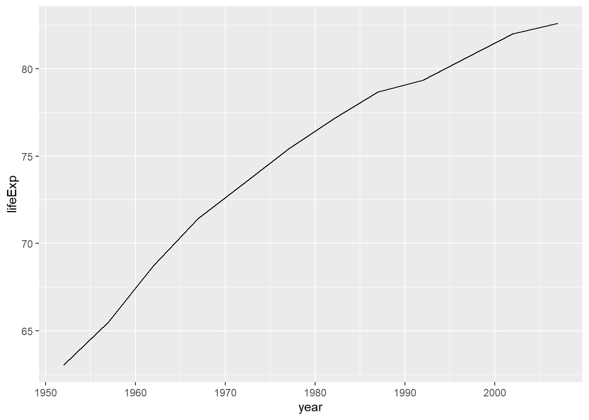
Notice that we first passed the dataset to ggplot using a pipe, defined the aesthetics and then added the geometry (lines in this case). One could also add points as follows
japan2 |>
ggplot(aes(x=year,y=lifeExp))+
geom_line()+
geom_point()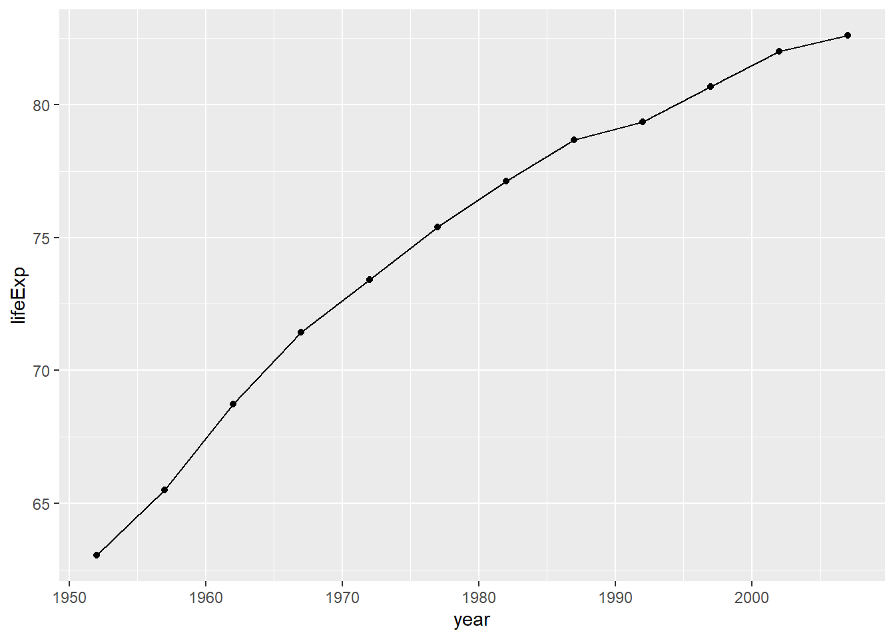
Axes labels and titles are added with the labs command
japan2 |>
ggplot(aes(x=year,y=lifeExp))+
geom_line()+
geom_point()+
labs(x="Year",y="Life Expectancy",
title="Life Expectancy vs Time (Japan)")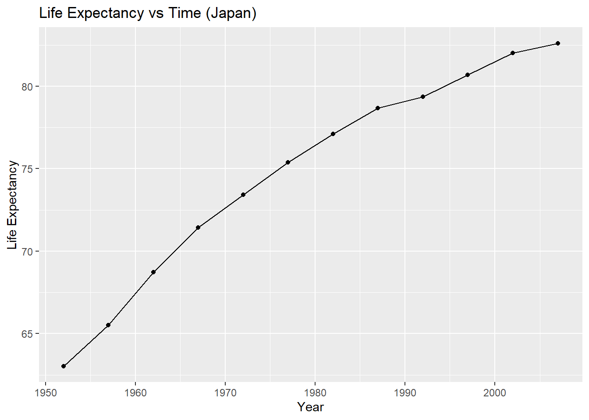
You can also change colors and background; see Data Carpentry for additional details. The textbook R Cookbook also has great examples.
Two other aesthetics commonly used in graphs are color and size. For example, suppose we wanted to incorporate population and gdp into the above graph.
japan2 |>
ggplot(aes(x=year,y=lifeExp,col=gdpPercap,size=pop))+
geom_point()+
labs(x="Year",y="Life Expectancy",
title="Life Expectancy vs Time (Japan)")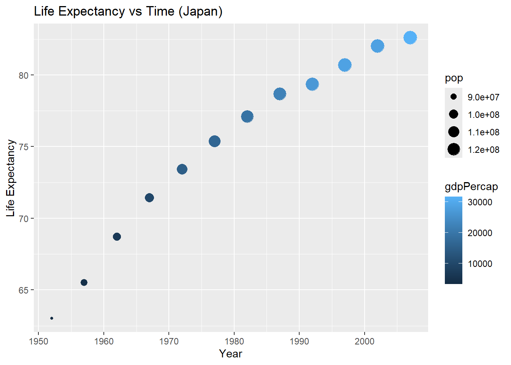
This default color palette isn’t great and there are many ways to change it. This also gives us an excuse to talk about the scale layer. You can apply scale to any of your aesthetics in order to change their attributes. Here is an example of how to change color with the popular viridis package:
library("viridis")
japan2 |>
ggplot(aes(x=year,y=lifeExp,col=gdpPercap,size=pop))+
geom_point()+
labs(x="Year",y="Life Expectancy",
title="Life Expectancy vs Time (Japan)")+
scale_color_viridis(name="GDP (per Capita)",option = "A")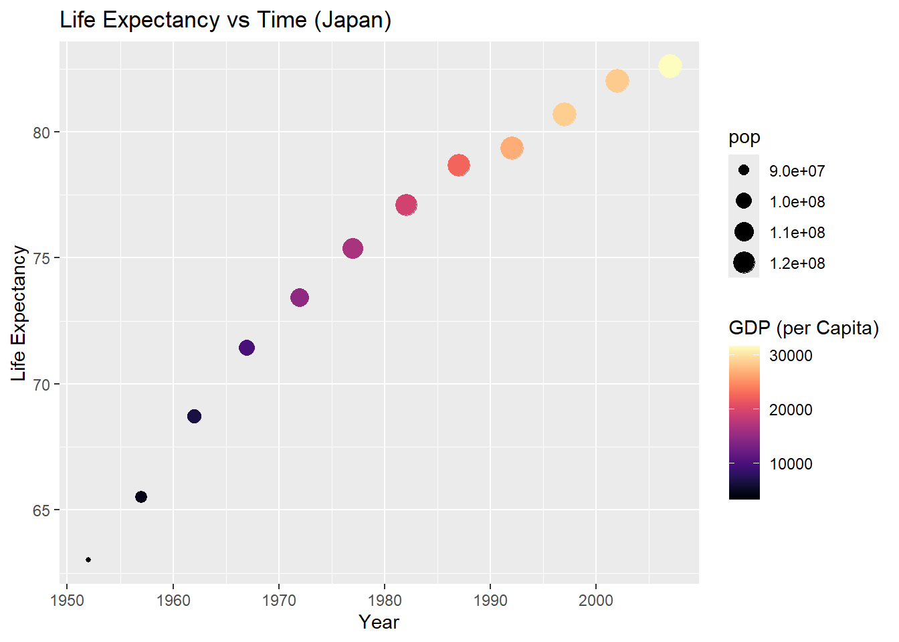
Using diverging color schemes (like going from blue to red) is also a popular choice:
japan2 |>
ggplot(aes(x=year,y=lifeExp,col=gdpPercap,size=pop))+
geom_point()+
labs(x="Year",y="Life Expectancy",
title="Life Expectancy vs Time (Japan)")+
scale_color_distiller(palette = "RdBu", direction = -1)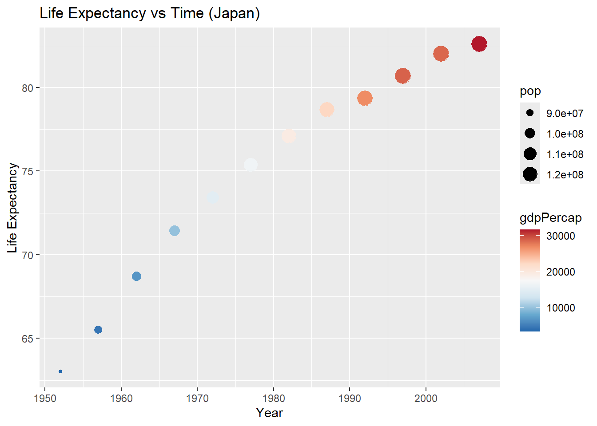
The Wes Anderson Palettes are fun too although they require using color gradients instead:
library(wesanderson)
pal <- wes_palette("Darjeeling1", 100, type = "continuous")
japan2 |>
ggplot(aes(x=year,y=lifeExp,col=gdpPercap,size=pop))+
geom_point()+
labs(x="Year",y="Life Expectancy",
title="Life Expectancy vs Time (Japan)")+
scale_color_gradientn(colours=pal)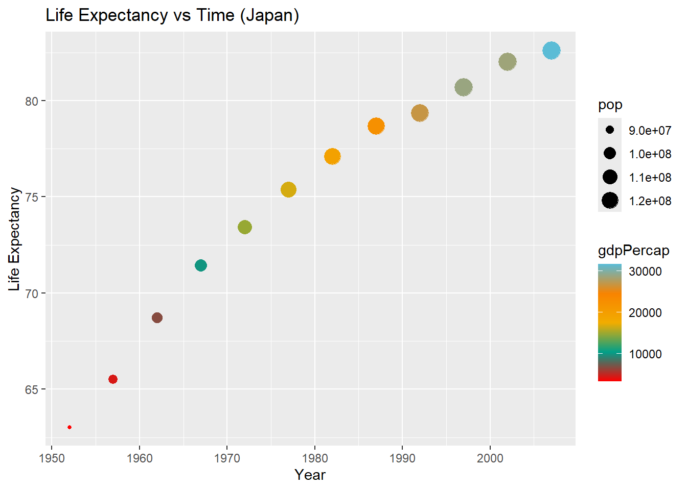
There are too many options to get into them all but the site Top R Color Palettes has a pretty good list for those who like wasting time messing around with such things (I can relate).
Discrete vs Continuous Aesthetics
In the above example, all of the aesthetics used were continuous variables. Suppose we want to compare Year vs Life Expectancy for the United States vs Japan. Then we would need to include the the discrete variable country as an aesthetic. First, let’s create a new dataset that has only those two the US and Japan. The droplevels command drops all unused values of country (since we are only selecting US and Japan - try running the commands without this line to see the difference).
us_v_japan=gapminder |>
filter(country %in% c("Japan","United States")) |>
select(c('country','year','lifeExp')) |>
droplevels()
table(us_v_japan$country)
Japan United States
12 12 Now we can create a scatterplot colored by country. You can use the viridis color schemes or you can manually define the values by name or hex code (the one below gives Pacific orange):
us_v_japan |>
ggplot(aes(x=year,y=lifeExp,col=country))+
geom_point()+
geom_line()+
labs(x="Year",y="Life Expectancy",
title="Life Expectancy vs Time")+
scale_color_manual(values=c("black","#E35205"), name="Country")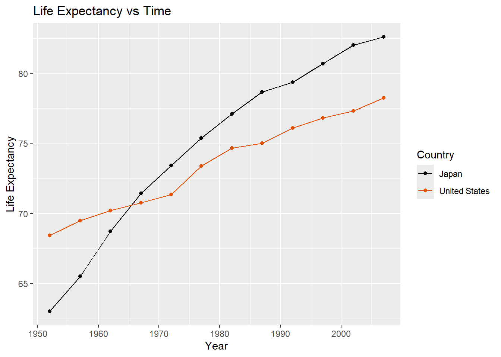
You can also create separate plots for values of a discrete variable using facets.
us_v_japan %>% ggplot(aes(x=year,y=lifeExp))+
geom_point()+
geom_line()+
labs(x="Year",y="Life Expectancy",title="Life Expectancy vs Time")+
facet_wrap(~country)
Histograms and Boxplots
We’ll conclude with two additional visualizations that you will find helpful as we progress through the course.
First, histograms. This is a useful tool for displaying the overall distribution of a single numeric variable like life expectancy:
japan2 |>
ggplot(aes(x=lifeExp))+
geom_histogram(fill="#009E73",col="black",breaks=seq(60,85,5))+
theme_bw()+
labs(x="Life Expectancy",y="Year")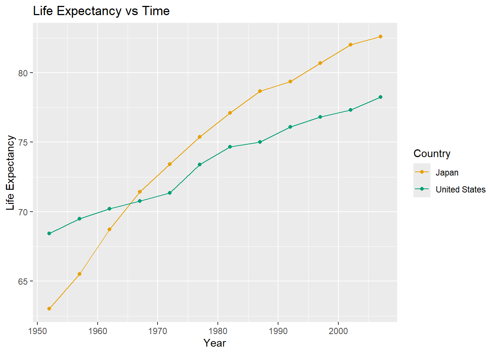
Note the use of the breaks command to manually define where the bins start and end. Choosing the appropriate bins is one of the most challenging parts of creating a good histogram as you want to balance bias (too few bins will oversmooth the distribution) with variance (too many bins will make the distribution look too jagged). In this case, the shape of the distribution is fairly robust since doubling the number of bins leads to roughly the same unimodal, left skewed shape:
japan2 |>
ggplot(aes(x=lifeExp))+
geom_histogram(fill="#009E73",col="black",breaks=seq(60,85,2.5))+
theme_bw()+
labs(x="Life Expectancy",y="Year")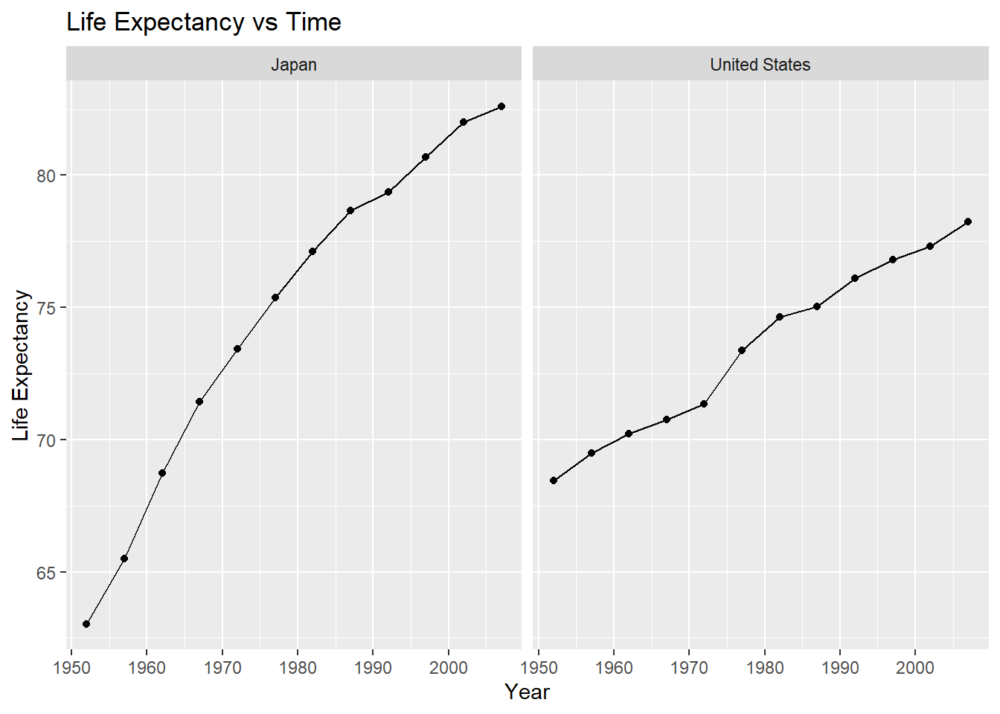
You can google Sturges’ Rule to find out more about R’s default choice (which I think rarely looks good).
The second visualization to mention is boxplots. This is a useful tool for comparing the distribution of a numeric variable between two different groups (like US vs Japan):
us_v_japan |>
ggplot(aes(x=country,y=lifeExp,fill=country))+
stat_boxplot(geom = "errorbar", width = 0.1) +
geom_boxplot(color = "black", width = 0.3)+
scale_fill_manual(values=c("#F0E442","#E69F00")) +
labs(x="Country",y="Life Expectancy of Different Years") +
theme(legend.position = "none")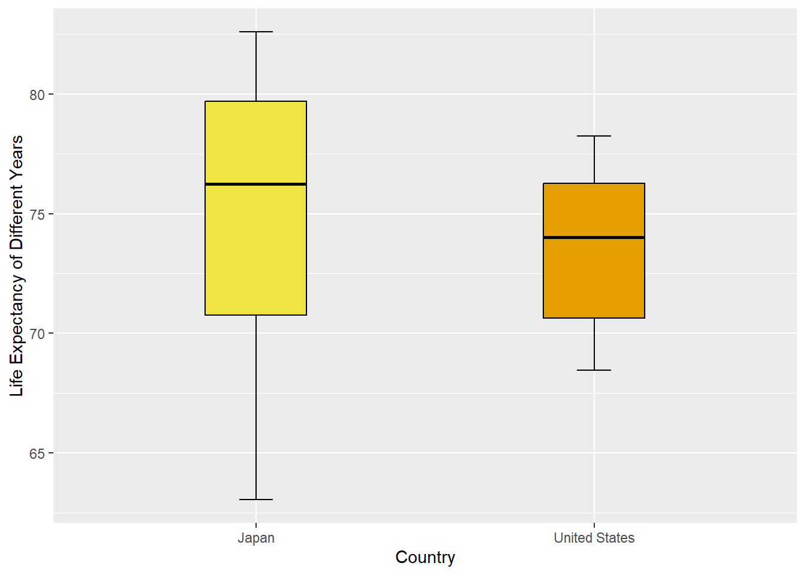
The addition of the “errorbar” and decrease in width aren’t necessary, but make it more pleasing to look at in my opinion.
Practice
Import the dataset Beerwings.csv (Source: Mathematical Statistics with Resampling and R) and complete the following steps. Note that Beer measures beer consumed in ounces and Hotwings measures number of hotwings consumed per individual.
- Create a histogram of the variable Beer using bins from 0 to 21 spaced with width = 3.
- Create a boxplot comparing beer consumption between Genders.
- Create a scatterplot comparing beer and hotwing consumption. Include nicely labeled axes titles and an added trendline.
- Add a color aesthetic of “Gender” to your plot from 3. Compare the trendlines shown in the graph. Do they appear to have different slopes or intercepts?
Footnotes
One comment here: you’ll notice that I frequently use
=instead of the more conventional<-for assigning values to variables. In my opinion the extra character isn’t worth it and=feels more natural coming from other languages. Either will work for all examples in this course so use whichever you prefer.↩︎